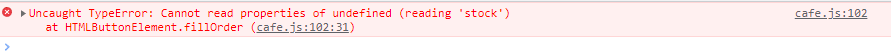
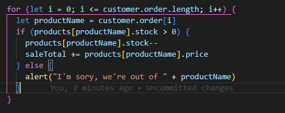

Problem Solving
Problems are abundant in our lives, and it is something we should embrace whole-heartedly. We shouldn’t view problems as a negative experience, but a temporary block to success that comes beyond it. Navigating through a problem successfully means that the problem, will no longer be a problem, should it arise again. However, it is understandable that challenging problems can cause stress and make one want to pull their hair out! Here’s a problem I faced during the 3rd Sprint in my DevAcademy foundations, relating to the code along Javascript Café exercise.
The Problem
The Javascript Café exercise was a code along activity with the course facilitator, and I got stuck on a TypeError for a loop section. I was trying to pull ahead of the activity by pausing the video and working on the code before being provided with the solution. Here’s a glimpse at my code where the problem lied. To my developer friends, can you spot what the error is?
 Yeap, you guessed it! I was looping past the end of the array with “i <= customer.order.length” instead of “i < customer.order.length”. I looked at the solution for the code but still could not spot the problem which led me to think that it was an error in accessing the customer object, when in fact it was an “=” sign which led to the problem.
Problem-solving Techniques I Utilised and How I Felt
At first, I tried to Google the error output I was obtaining. This led me into a series of investigations through the solutions that was provided on the web. I looked up keywords such as “JS how to access object properties”, but this was to no avail. I had tried Googling the problem for 2 hours and during the session, it was incredibly stressing how I had followed the code along session but did not obtain the result. I decided it was time to ask for help from my fellow cohorts and facilitator. I got onto DevAcademy’s Discord group under the help-request section and posted my problems. A swift response was provided by Gerard, he immediately spotted the error along with reasonings. I was dumbfounded by how simple the problem was at first but incredibly grateful that Gerard was understanding towards me! Thank you, Gerard!
What I Learnt
Not only did I learn the solution to the technical problem, but also understood that some times I just need to zoom out of the problem and examine the code line by line. Console.logging each loop iteration is a way to help visualise the output.
Using Different Problem Solving Methods
- Pseudocode – I always utilise this method prior to commencing my code. It helps me plan the steps required to achieve the solution so that my thoughts aren’t scrambled in my brain.
- Trying something – Every time I feel like I’m stuck in thought on how it would work, I just jump straight into the code and experiment my idea. If the idea does not work out, I would eliminate that idea which leads me into a series of new ones.
- Rubber ducky method – This is something I have yet to do, although I mumble to myself a lot each time I’m thinking of a solution. I have a Goku figurine sitted next to my monitor, so I will most definitely try it out on him in the future. He might just provide a “Kame-kame-ha” idea!
- Reading error messages – I am still familiarising myself with error messages by Google them each time they come out. I hope I get to a point where I am able to better understand these!
- Console.logging – I always use console.logging to visualise my code outputs, and it works wonders to figuring out the problem.
- Googling – Google is love, google is life!
- Asking my peers for help – I never fail to ask my peers for help, especially when it is a problem I am unable to solve.
- Asking coaches for help – Coaches are no exception to my extent of help request as they are very knowledgeable and most likely have dealt with the problem countless of times.
- Improving my process with reflection – I treat each problem as a lesson, understanding the cause of the problem, and trying my best not to repeat them again.